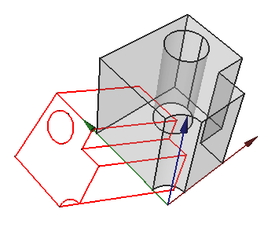

Projeter la Forme Projeter la Forme
|
| Emplacement du menu
|
| Mise en Plan → Projeter la Forme
|
| Ateliers
|
| Drawing, Complete
|
| Raccourci par défaut
|
|
|
| Voir aussi
|
|
|
|
Description
Cet outil crée une projection de l'objet sélectionné (Source) dans la vue 3D .

Utilisation
- Sélectionnez un objet dans la vue 3D ou dans l'arbre de projet
# Dans le menu Dessin, cliquez sur Projeter la Forme
- Définir les options souhaitées dans le dialogue de tâche
- Clic OK
Une objet de projection (objectname_proj) sera ajouté au projet. Pour les projections ultérieures du même objet source, l'objet de projection sera nommé objectname_projXXX, où xxx est un nombre à trois chiffres. |}
Modifier une projection existante
Les paramètres de projection peuvent être modifiés dans l'éditeur de Propriété.}
Base * DONNÉESLabel:
Projection
- DONNÉESDirection: définit la direction de la projection. C'est le vecteur normal du plan de projection. Par exemple, pour projeter l'objet sur le plan xy, utiliser (0,0,1). Pour inverser la projection, utilisez des valeurs négatives.
- DONNÉESHCompound:
- DONNÉESLigne Iso HCompound:
- DONNÉESLigne Iso VCompound:
- DONNÉESSortie ligne HCompound:
- DONNÉESSortie ligne VCompound:
- DONNÉESRg1 Ligne HCompound:
- DONNÉESRg1 Ligne VCompound:
- DONNÉESRg NLigne HCompound:
- DONNÉESRg NLigne VCompound:
- DONNÉESSource: l'objet en cours de projection
- DONNÉESVCompound:
|
|
{kind=link}